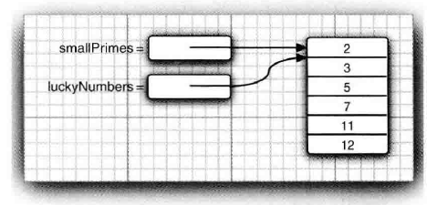

第3章 Java基本程序设计结构
3.5.2
Math.round：四舍五入（返回long类型）
3.6 字符串
substring方法：提取子串
+：连接
String类对象：不可变字符串（修改字符串变量以引用另一个字符串），优点：编译器让字符串共享
equals方法：判断字符串是否相等（equalsIgnoreCase:不区分大小写）
注 ：==只能确定字符串是否放在同一个位置上（必然相等）
3.6.5 空串与Null串
空串长度为0，Null串str==null
3.6.9 构建字符串
StringBuilder类：字符串构建器，适用于由较短的字符串构建字符串。
3.8
3.8.6
带标签的break语句：跳出多重循环
1 | ... |
3.9 大数值
BigInteger
BigDecimal
3.10 数组
初始值
数字数组：0
布尔型数组：false
对象数组：null
for each 循环
1 | for (variable : collection) statement |
3.10.3 数组拷贝
一个数组变量拷贝给另一个数组变量：两个变量引用同一个数组
